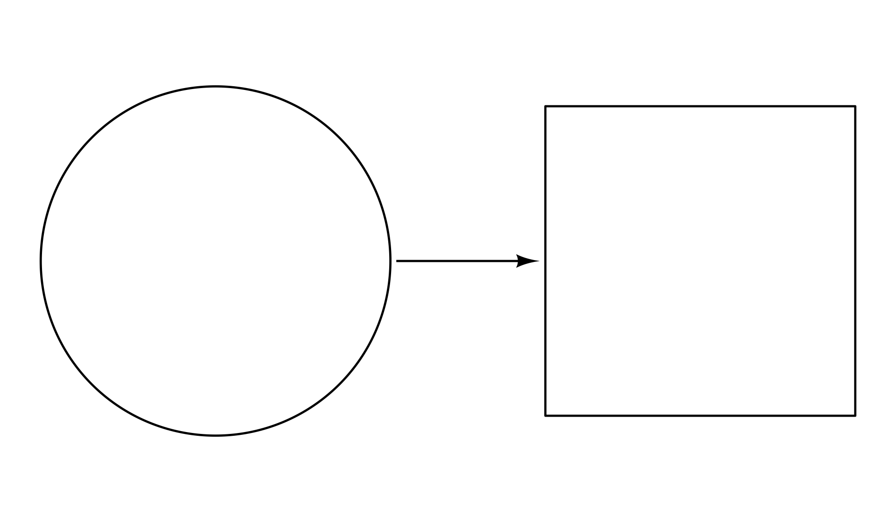

The ggdiagram package takes an object-oriented approach to making diagrams and plots the results using ggplot2.
This package is still experimental, and functions are likely to change in many ways. Every time I run into speed bumps or inconveniences as I use the program in practice, I adapt it to anticipate user needs.
My motivation in making ggdiagram was to find a way to approach the functionality of TikZ but with the flexibility and convenience of R. The ggdiagram package is built atop S7 and is integrated with ggplot2, making heavy use of ggtext, ggforce, and ggarrow.
The ggdiagram package is not a replacement for the standard ggplot2 functions. The underlying grammar of ggplot2 is well designed for visualizing data. The ggdiagram functions are best suited for creating a small number of visual objects that interrelate. If anything, they can be thought of as extensions of ggplot2::annotate.
Installation
You can install the development version of ggdiagram like so:
remotes::install_github("wjschne/ggdiagram")Example
In @fig_example, we create a circle object with ob_circle and a rectangle object with ob_rectangle, placing the rectangle such that there is .5 units of separation between the two objects.
The ggdiagram function is a a wrapper for ggplot, that sets some defaults (e.g., theme_void, coord_equal, fonts, line size, etc.).
The ob_* functions have methods such that they can be added to any ggplot. Under the hood, they are first converted to an appropriate geom and then added to the ggplot object. In this case, an ob_circle is converted to a ggforce:geom_circle, and an ob_rectangle is converted to a ggforce::geom_shape.
The connect function connects the circle and rectangle at their edges with an arrow (via ggarrow::geom_arrow_segment).
library(ggdiagram)
c1 <- ob_circle(radius = 1 / sqrt(pi))
r2 <- ob_rectangle() %>%
place(from = c1,
where = "right",
sep = .5)
ggdiagram() +
c1 +
r2 +
connect(c1, r2) 